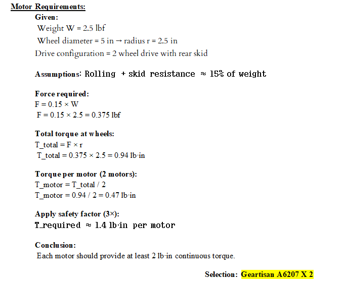
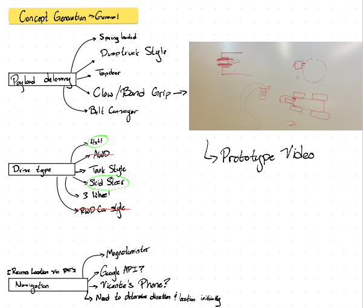

System Design
Here you will find our group’s stages when defining what we are going to build. Consider this to be us finding our footing on how exactly we plan to make our rover.
Engineering Specifications
Our engineering specifications translate our product requirements into clear, measurable, and testable performance targets for the rover. These specifications define how the rover should behave in terms of weight, speed, durability, navigation accuracy, and obstacle avoidance. By setting quantitative limits and targets, we ensure our design can be objectively evaluated through testing rather than only judged qualitatively.
These specifications also guide our design decisions and help us choose appropriate components, materials, and control strategies. They serve as a bridge between what the customer wants (product requirements) and how the rover must technically perform. As we develop and test the rover, we will compare its actual performance against these specifications to verify that our design meets the project goals.
Engineering Specifications
- Total rover mass, including batteries and all onboard electronics, shall be less than or equal to 2.5 lb.
- The rover shall achieve a straight-line ground speed of 1.0 ft/s ± 10% on a flat surface..
- -The rover shall withstand a vertical drop of 18 inches onto a hard surface with no loss of functionality or mission-critical damage
- -Commanded turning maneuvers (90° rotation) shall be completed within 5.0 seconds ± 0.5 seconds with an accuracy of ± 5 deg.
- -The rover shall travel commanded distances with an accuracy of ±10% of the commanded value for distances of 5 ft or greater..
- The rover enclosure shall meet or exceed IP43 ingress protection standards.
- The rover shall detect obstacles within 12 inches of its path and autonomously alter its trajectory to avoid collisions while continuing toward the mission goal.
- The rover shall autonomously navigate to received GPS coordinates and stop within ±5 ft. of the target location.
Photo (Engineering Specifications)

Supporting Calculations
The following is a photo, that shows the claculation of are Motor Requirment, that made us choose the Selection: Geartisan A6207 X 2
Photo #1

Photo #2

Work Breakdown Structure
This tab will show what our work breakdown structure will look like.
Our WBS will contain the following parts:
Work Breakdown Structure with Subsystems
-
1. Mechanical System
- A. Chassis and off-road wheels
- B. Payload mount
- C. Water-resistant enclosure
-
2. Electrical System
- A. Battery and power regulation
- B. Motors and motor drivers
- C. GPS module
- D. RF receiver
- E. Obstacle sensors
-
3. Software
- A. Firmware setup
- B. GPS processing
- C. RF message decoding
- D. Obstacle avoidance logic
-
4. Integration
- A. Assemble rover
- B. Connect electronics
- C. Load software
-
5. Missions
- A. Mission planning
- B. Mission execution
- C. Mission performance evaluation
-
6. Testing
- A. Drive and mobility test
- B. GPS navigation test
- C. RF communication test
- D. Obstacle avoidance test
- E. Water resistance check
Photo of full WBS

Concept Generation
Concept generation involved brainstorming multiple mechanical and navigation approaches to meet the rover’s mission requirements.
The group explored different drivetrain styles, payload delivery methods, and navigation systems before narrowing down the most practical and feasible concepts for development
The group thought of conceptts for 3 main parts, which included payload delivery, drive type, and Navigation.
The Group made concepts for Chasis ideas
Photo (Concept Generation)

Photo (Concept Generation chasis)

Principle Concepts Developed,Concept Evaluation/Engineering Analysis
For the priciple concepts the group decided on the following.
(Put future writing here)
Payload delivery
- The Payload Delivery will be a claw/band grip
Drive Type
- The Drive Type will be a Foward/Skid Type
Motor driver
- The motor driver will be a l298N Motor Driver
Power Supply
- The Power supply will be a Lm2596 Buck Converter
Battery Requirements
- The Batter will be a 1300 3s 11.1V Tipo
Motor Selection
- The Motor selection will be a Geartsian A6207 X 2
Weight Concept
- The group beleives that the overall weight will be about 346 grams/0.76 pounds.
Photo #1

Photo #2

Photo #3 Concept Evaluation- Hardwear selction part 1

Photo #4 Concept Evaluation- Hardwear selction part 2

Photo #5 Concept Evaluation- Hardwear selction part 3

Photo #6 Concept Evaluation- Hardwear selction part 4

Photo #7 Concept Evaluation- Hardwear selction part 5

Photo #8 Photo #7 Concept Evaluation- Weight Analysis

Design Alternatives
- Some design alternatives included for Payload: Dump truck style, Trap door, abd spring loaded.
- Some Alternative designs for drive type included AWD (A wheel Drive), Tank Style, and RWD Car style.
- Some Alternative designs for Navigation are, using Google API, using group member's Vicente's Phone since it's a droid, or use a magnometer.
Photo #1

Photo #2

Sketches and CAD Models
Team member William made a rough idea on solidworks for a protoype of the rover
(Put future writing here)
Photo #1 rough idea

Photo #2

Concept Descriptions
This tab will give brief descriptions for are concepts
The rover will use a claw or band-style gripping mechanism to securely hold and transport the payload. This design allows for controlled release while keeping the system lightweight and simple.
The rover will use a forward skid-steer drive configuration for improved turning and maneuverability. This system allows tight turns and better control during obstacle avoidance.
The L298N motor driver will control the direction and speed of the DC motors. It allows independent control of each motor, enabling precise steering and movement.
An LM2596 buck converter will regulate voltage from the battery to safely power sensitive electronics. This ensures stable operation of the Arduino and sensors.
The rover will use a 3S 11.1V LiPo battery to provide sufficient power for motors and electronics. This battery balances weight, capacity, and performance for mission duration.
Two Gearstian A6207 gear motors will provide the torque required for movement and obstacle navigation. Their gear reduction improves efficiency and ensures reliable traction..
The estimated total weight of the rover is approximately 346 grams (0.76 lb), staying well under the 2.5 lb requirement. Keeping the rover lightweight improves efficiency, durability, and overall performance.
(Put future writing here)
(Put future writing here)
Photo #1

Photo #2

Concept Evaluation Videos/prototyping videos
The group evaluated the concepts of Payload Delivery, Drive Type, Motor Driver, Power Supply, Battery Requirements, Motor Selection, and overall Weight Concept. Then decided to make a prototype
The group made a prototype for functionality of holding the block with a hairtie and then and releasing it using a lever
Prototype / Concept Evaluation Video
Photo (Concept Evaluation)

Decision Matrices / Belief Maps
The team made a matrix for what they beleived was the right option for the Drive Type. FWD + Skid was the overall pick.
(Put future writing here)
Photo #1

Photo #2

Leave blank for now in case we need another tab for future stuff
Leave blank for now in case we need another tab for future stuff
Leave blank for now in case we need another tab for future stuff